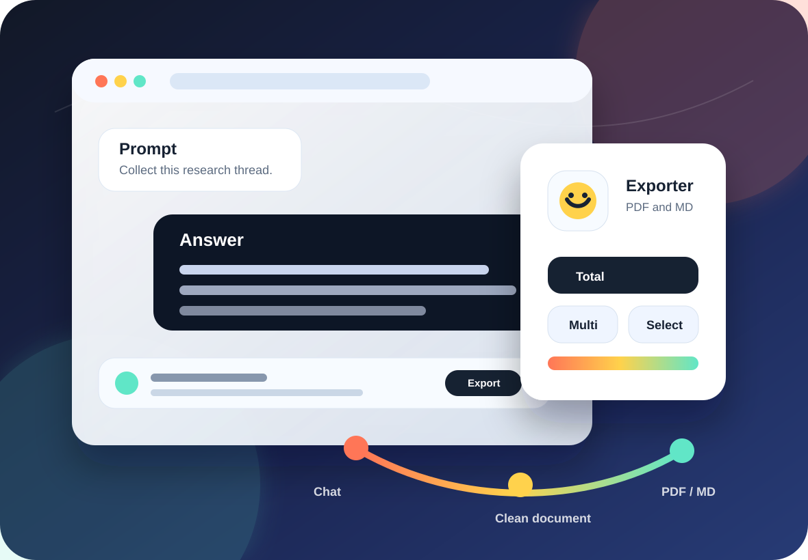

Open the conversation
Use the extension on supported ChatGPT or Gemini pages. The floating smile control stays out of the text and opens the export menu on click.
Premium local-first export for AI conversations
A polished Chrome extension for turning supported ChatGPT and Gemini pages into print-ready PDF workflows and clean Markdown files. Built for research, coding, planning, and long-form AI sessions.

Workflow
Use the extension on supported ChatGPT or Gemini pages. The floating smile control stays out of the text and opens the export menu on click.
Total collects the loaded conversation range. Multi combines selected turns. Select saves chosen turns as separate files.
PDF uses Chrome print preview. Markdown downloads directly through the browser. Conversation content stays out of the license server.
Export modes
The extension is tuned for real AI conversations: repeated turns, code blocks, lists, and the occasional enormous thread you still need to archive.
Total scrolls the current page to collect conversation turns that the browser can load, then exports them as one PDF or Markdown document.
Select several turns and export them together as one print document or one Markdown file.
Pick individual turns and save each selected item as its own PDF print window or Markdown download.
Conversation content is processed in the browser. License checks use account and payment status only.
Commerce ready
The site includes privacy, terms, refund, and checkout success pages so customers understand what is processed locally, what is used for licensing, and how refunds work.
Supporter License
Supporter License funds maintenance and unlocks Multi and Select workflows. Activation is tied to Google sign-in so it can be restored across Chrome profiles and devices.
FAQ
No. It is an independent browser extension and is not affiliated with, endorsed by, or sponsored by OpenAI, ChatGPT, Google, or Gemini.
No. It opens a print-friendly window and uses Chrome print preview, where you can choose "Save as PDF".
No. Total collects the conversation range that can be loaded into the current browser page through automatic scrolling.
Only to identify the account for Supporter License activation, checkout, refresh, refunds, and cross-device restoration.